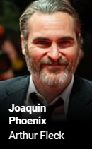
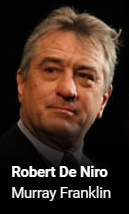
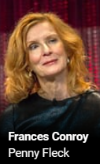
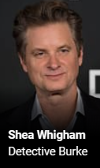
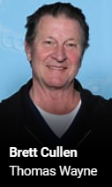
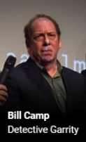

Joker - Le Film
Les Acteurs
 
|
Joaquin Phoenix, né le 28 octobre 1974 à San Juan (Porto Rico), est un acteur, producteur, musicien et militant écologiste américain. Phoenix a commencé à jouer dans des séries télévisées avec son frère River Phoenix et sa sœur Summer. Son premier film majeur est Cap sur les étoiles sorti en 1986. Il a parfois été crédité sous le pseudonyme de « Leaf Phoenix », mais il est ensuite revenu à son prénom de naissance, Joaquin. |
|
|
Robert De Niro, né le 17 août 1943 à Manhattan (New York), est un acteur, réalisateur et producteur
américain d'origine italienne. |
|
|
|
Zazie Beetz est une actrice germano-américaine, née le 1er juin 1991 à Berlin. Elle est révélée par son rôle de Vanessa dans la série télévisée Atlanta. Au cinéma, elle participe au film-catastrophe de science-fiction Geostorm (2017). Puis elle incarne la mercenaire, mutante, Neena Thurman / Domino dans le blockbuster Deadpool 2. |
|  |  |  |  |